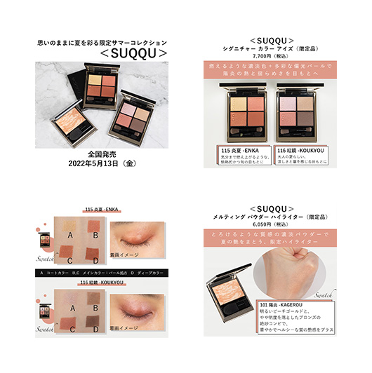

Banner
【SNS広告バナー】三越伊勢丹meeco様
概要
オンライン化粧品サイトmeecoの公式SNS(Twitter,Instagram)に投稿されるバナーを制作しました。
要件定義
【テーマ】化粧品ブランドSUQQUの
SUMMER COLLECTION 2022シリーズ アイシャドウ・ハイライトの紹介
【サイズ】1080px × 1080px 計4枚
【掲載情報】
・表紙：①ブランド名 ②タイトル ③発売日 ④発売情報
・2枚目以降：①ブランド名、商品名、色番/色名 ②価格 ③商品紹介（商品特徴やおすすめポイントなど） ④スウォッチ（どの色かわかるように色番/色名をスウォッチ写真に記載） ⑤着画※番号は掲載優先順
【フォント】游ゴシックのみ※2枚目以降は飾り文字であれば別フォント使用可 表紙：50pt以上 2枚目以降：25pt以上
【カラー】指定の白・黒・グレー＋1色（商品やブランドのトンマナに合わせた1色）
【装飾】・商品を目立たせるために基本的には、縁取り文字・立体文字・文字の装飾NG
・表紙：テキスト背景の座布団以外は全てNG
・2枚目以降：座布団、アンダーライン、背景（無地かつ上記カラーで）OK
【素材】提供素材のみ使用可
【目的】meecoの認知拡大、meeco取扱商品（特に新商品・限定品）の興味喚起
制作期間
約3週間
使用ツール
Photoshop
制作
2022年
工夫した点
・商品のトンマナに合わせたアクセントカラーを設定しました。
・スウォッチ・着画はクライアントが商品購入の参考になるポイントだと思い、大きめに配置しました。
＜ #SUQQU ＞思いのままに夏を彩る限定サマーコレクション🌺いまだけの、陽炎の魅惑🌞✨
— meeco（ミーコ）公式 (@meecomeeco1) April 25, 2022
ブランド一覧はコチラから ► https://t.co/Aw3x2RMQXo#meeco #スック pic.twitter.com/ikSRTJiciT
Other Works